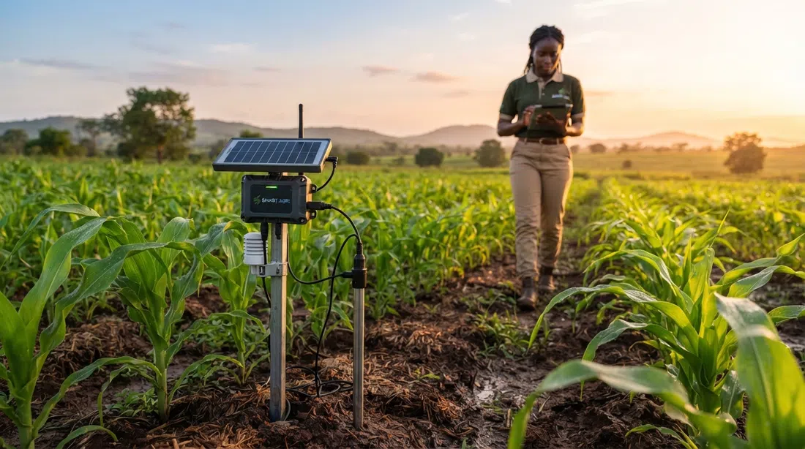

01
01Formation, emploi et talents numériques
Formation, certification, placement et renforcement des capacités numériques.

AGROPULSE GLOBAL SOLUTIONS
Des compétences en formation, données, climat, innovation et conseil stratégique pour les filières agricoles.
NOS DOMAINES D’INTERVENTION
01Formation, certification, placement et renforcement des capacités numériques.

02Diagnostic, cartographie, applications, portails et politiques de gouvernance des données.
03Prévisions de prix et de rendements, aide à la décision, tableaux de bord et publications.
 04
04Mesure, carbone, ESG, traçabilité, finance verte, risques et adaptation.
 05
05Modèles d’affaires, incubation, accélération, mentorat et mise en relation.
 06
06Diagnostics, faisabilité, politiques de digitalisation, études de marché et mécanisation.